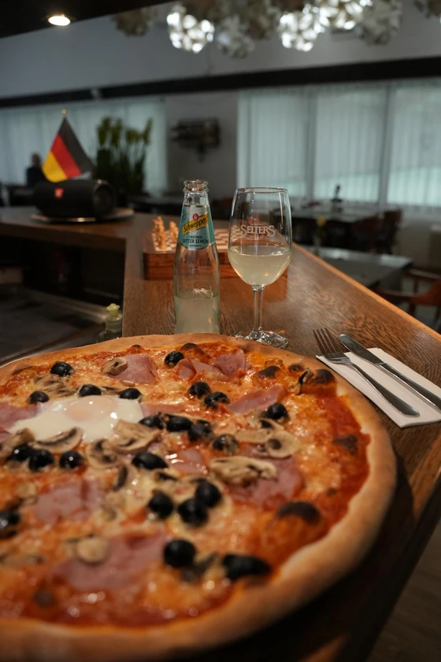
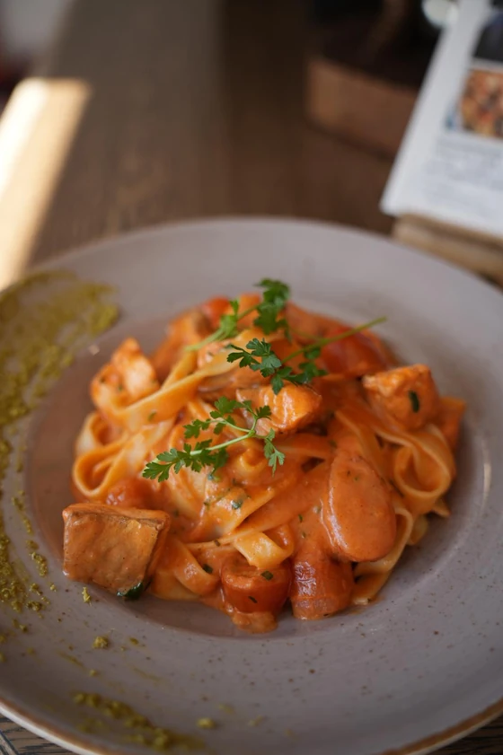
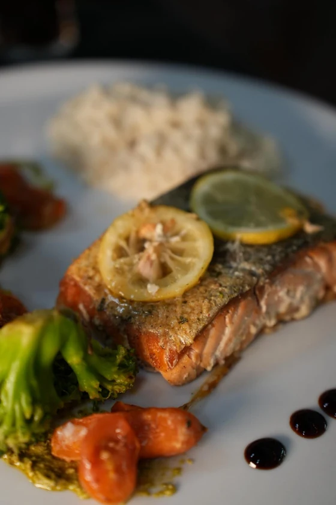

LA TUA PAUSA ITALIANA
Unser Mittagstisch
Vier Mittagsgerichte zur Wahl, dazu ein kleiner Beilagensalat.
Mo · Di · Do · Fr11:30–14:00 Uhr



Alle Mittagsgerichte werden mit einem kleinen Beilagensalat serviert.
Nur zum Verzehr im Restaurant. Mittwoch Ruhetag · Kein Mittagstisch an gesetzlichen Feiertagen.
Bei Fragen zu Allergenen, Zusatzstoffen oder Unverträglichkeiten wenden Sie sich bitte an unser Servicepersonal. Wir informieren Sie gerne.